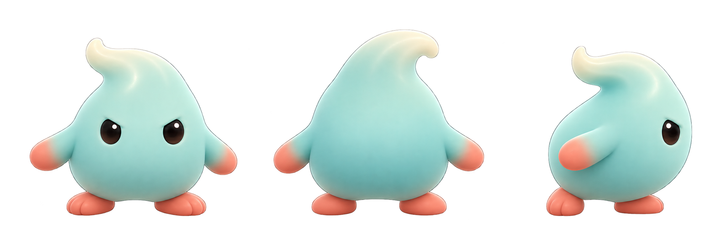
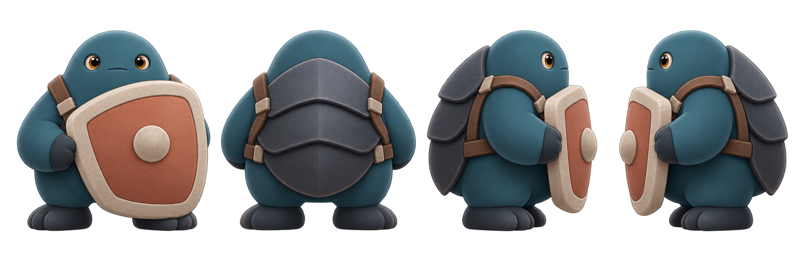
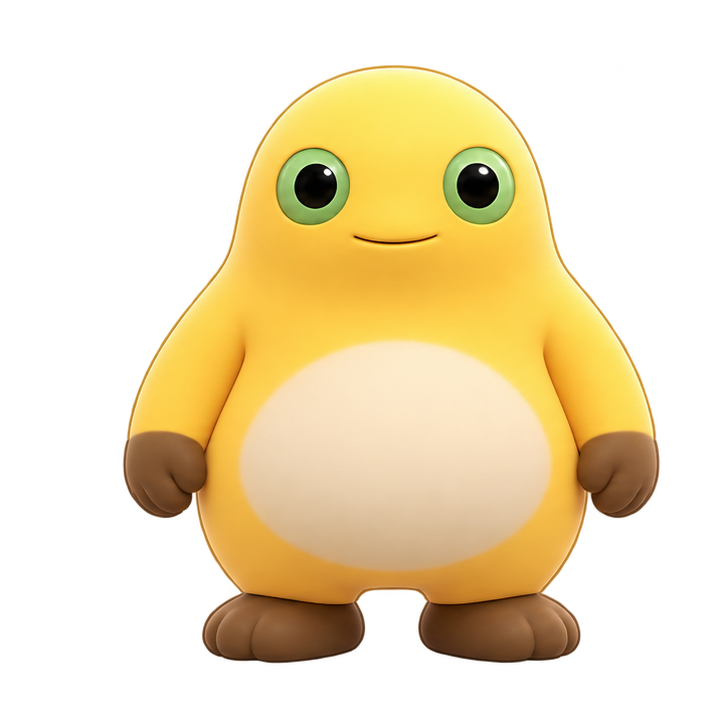

奶丁 · naiding
小型、轻快、向前追逐；建议高度为主角的 0.78 倍。

正面背面侧面（向右）
水滴梨形轮廓、后掠奶旋冠与短小侧鳍强调轻盈和追击方向。表情偏专注，前摇可进一步用低身蓄力区分攻击。
薄荷青冷青阴影珊瑚点色
第一章 W3 两种杂兵的三视概念初稿。奶丁轻快追击，奶盾慢速正面防守；两者都延续 P4 柔和圆润立绘质感，但避开主角的黄身、绿眼和奶白腹部组合。
概念方向已通过 · 2026-10-29小型、轻快、向前追逐；建议高度为主角的 0.78 倍。

水滴梨形轮廓、后掠奶旋冠与短小侧鳍强调轻盈和追击方向。表情偏专注，前摇可进一步用低身蓄力区分攻击。
宽厚、低重心、防守意图强；建议高度为主角的 1.12 倍。

深青厚身与背部甲片建立重量感；独立暖色大盾留出眼睛和表情。两侧面稿都将盾牌放在前进侧，避免运行时镜像后盾牌朝反。
以通过的 P4 A1 正面待机帧为 1.00 高度。图像只用于概念尺寸比较；脚底锚点和 UE 世界单位需在动画稿及运行时单独校准。

奶丁以冠尖和短鳍形成细长上扬轮廓；奶盾以外扩的背甲和大盾增加视觉宽度。正式制作时保持三向脚底落点一致，盾牌另做分层，便于正面格挡和受击反馈。
梨滴形躯干 + 后掠奶旋冠 + 短侧鳍；追击姿态以后倾冠尖带出方向。
脸部始终露出；盾牌置于身体前侧但不盖住双眼。背视用甲片和背带清楚标识背面。
奶丁用冷薄荷青；奶盾用深蓝青/石板灰；主角保留奶黄、绿眼与奶白腹部。